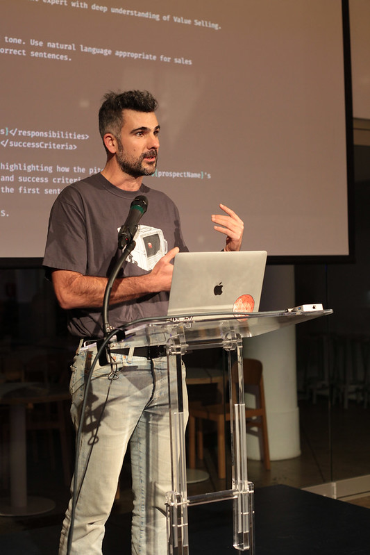

◆ Program the model.
DSPy.rb: Stanford’s DSPy, in Ruby — signatures, modules, optimizers, no brittle prompt strings.
Visit DSPy.rb →
❋ quaid
Get your chats back. Export ChatGPT and Claude conversations locally.
❋ plausible-cli
Plausible Analytics for AI agents and humans.
❋ garmin-cli
Pull your Garmin Connect data from the terminal.
❋ whatsapp-cli
WhatsApp from your terminal. JSON interface for automation.
❋ orb
Orb billing forensics from the terminal.
❋ lf-cli
Query Langfuse traces and metrics from the terminal.
❋ exa-ruby
Typed Ruby client and CLI for the Exa.ai search API.
❋ sorbet-baml
Sorbet type definitions for BAML. Schema and Ruby agree on what the model returns.
❋ a2ui-rails
Google’s A2UI, ported to Rails on DSPy.rb and Turbo Streams.
❋ sorbet-toon
Typed Markdown tables for LLMs. Structs survive the round-trip.
❋ engineering
Claude Code engineering skills.
◆ The maintainer.
Fractional product engineering leader — startups, bootstrap through Series B. Previously Apple, Atlassian, New Relic.